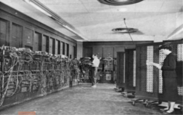

Bases da Internet
Profº Jorge Luís Gregório
“A capacidade do ser humano em calcular quantidades nos mais variados modos foi um dos fatores que possibilitaram o desenvolvimento da matemática e da lógica.”

• Primeiros computadores pessoais:
Os mainframes eram maiores e caros, sendo utilizados apenas por grandes empresas.
• Segundo o Computer History Museum, o primeiro "computador pessoal" foi o Kenbak-1, lançado em 1971. Tinha 256 bytes de memória e foi anunciado na revista Scientific American por US$ 750; todavia, não possuía CPU e era, como outros sistemas desta época, projetado para uso educativo (ou seja, demonstrar como um "computador de verdade" funcionava).
• O Apple II foi lançado em 1977 com teclado integrado, gráficos coloridos, sons, gabinete de plástico e oito slots de expansão. Era equipado com um processador MOS Technology 6502 com um clock de 1 MHz, 4 kB de memória RAM, um interface para fitas cassetes de áudio e uma ROM que incluía um interpretador de BASIC. O controlador de vídeo apresentava 24 linhas com 40 colunas de carateres (apenas letras maiúsculas), com saída NTSC para um monitor ou, através de um modulador RF, para uma televisão.
• Em 1980, a IBM estava convencida de que precisava entrar no mercado da microinformática e o uso profissional dos micros só deslanchou quando ela entrou nesse mercado. A IBM PC utilizava o PC-DOS e possuía a BIOS como única parte de produção exclusiva da IBM.
Como tudo começou?
• A Web foi criada em 1989, por Tim Berners-Lee, para ser um padrão de publicação e distribuição de textos científicos e acadêmicos.
• Atualmente Tim é diretor do W3C (World Wide Web Consortium), além de pesquisador e professor de Ciências da Computação.
GERAÇÕES:
• 1ª Geração (1940 - 1952): É constituída por todos os computadores construídos a base de válvulas a vácuo, e que eram aplicados em campos científicos e militares. Utilizavam como linguagem de programação a linguagem de máquina, a única forma de armazenar dados era através da cartões perfurados.
• 2ª Geração (1952 - 1964): Tem como marco inicial o surgimento dos transitores. As máquinas diminuíram muito em tamanho e suas aplicações passam além da científica e militar a administrativa e gerencial. Surgem as primeiras linguagens de programação. Além do surgimento dos núcleos de ferrite, fitas e tambores magnéticos passam a ser usados como memória.
• 3ª Geração (1964 - 1971): Tem como marco inicial o surgimento dos Circuitos Integrados (C.I.). Grande evolução dos Sistemas Operacionais, surgimento da multi-programação, "real time" e modo interativo. A memória agora é feita de semicondutores e discos magnéticos.
• 4ª Geração iniciada em 1970, é caracterizada por um aperfeiçoamento da tecnologia já existente, proporcionando uma otimização da máquina para os problemas do usuário, maior grau de miniaturização, confiabilidade e maior velocidade, já da ordem de nanossegundos (bilionésima parte do segundo).
• O termo 5ª Geração foi criado pelos japoneses para descrever os potentes computadores "inteligentes" que queriam construir em meados da década de 1990. Posteriormente, o termo passou a envolver elementos de diversas áreas de pesquisa relacionadas à inteligência computadorizada: inteligência artificial, sistemas especialistas e linguagem natural. Mas o verdadeiro foco dessa ininterrupta quinta geração é a conectividade, o maciço esforço da indústria para permitir aos usuários conectarem seus computadores a outros computadores. O conceito de supervia da informação capturou a imaginação tanto de profissionais da computação como de usuários comuns.
A sociedade, como um todo, tem muito a ganhar com tanto avanço tecnológico, porém, diante desse mundo sem fronteiras que a Web nos apresenta, problemas quanto à segurança na Internet vem sendo um assunto bastante crítico hoje em dia, devido a inúmeras fraudes, golpes, pedofilia, invasão de privacidade entre outros problemas que acontecem a todo tempo, no mundo todo.
Abaixo, segue um vídeo interessante de como evitar golpes pela Internet: